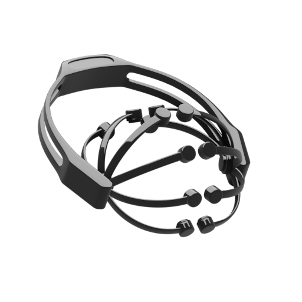

<ion-header>
  <div class="">
    <ion-toolbar>
      <ion-buttons slot="start">
        <ion-button (click)="openNav()">
          <ion-icon slot="icon-only" name="menu"></ion-icon>
        </ion-button>
      </ion-buttons>
      <ion-title><b>scan</b><span class="o-5">devices</span></ion-title>
    </ion-toolbar>
  </div>

  <div class="toolbar-menu">
    <div class="center-div">
      <small class="white-text o-5">Pull down to scan.</small>
    </div>
  </div>
</ion-header>

<ion-content>

  <ion-refresher slot="fixed" (ionRefresh)="refresh($event)">
    <ion-refresher-content></ion-refresher-content>
  </ion-refresher>

  <ion-list>
    <div class="panel" *ngFor="let device of deviceService.scannedDevices">
      <ion-item-sliding>
        <ion-item lines="none">
          <ion-label>
            <ion-text color="primary"><b>{{ device.name }}</b></ion-text><br>
            <ion-text color="medium"><small>{{ device.address }}</small></ion-text>
          </ion-label>
          <ion-thumbnail slot="start">
            
          </ion-thumbnail>
          <ion-text color="medium" slot="end"><small>Slide</small></ion-text>
          <ion-icon name="caret-back" slot="end" color="medium" class="small-icon"></ion-icon>
        </ion-item>
        <ion-item-options side="end">
          <ion-item-option (click)="connect(device)">Connect&nbsp; <ion-icon name="bluetooth"></ion-icon></ion-item-option>
        </ion-item-options>
      </ion-item-sliding>
    </div>
  </ion-list>

  <ion-item lines="none" *ngIf="!deviceService.scanning">
    <ion-text slot="end" color="medium">
      <small>Found {{ deviceService.scannedDevices.length }} devices.</small>
    </ion-text>
  </ion-item>
</ion-content>
